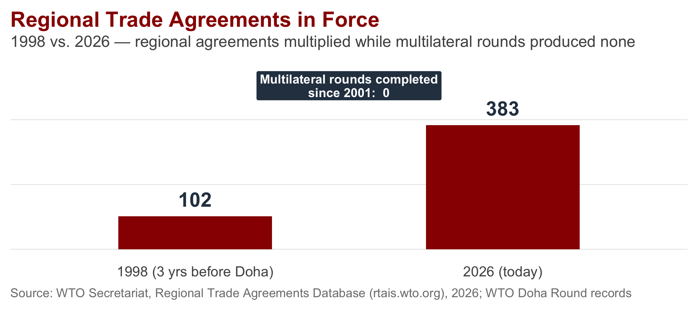
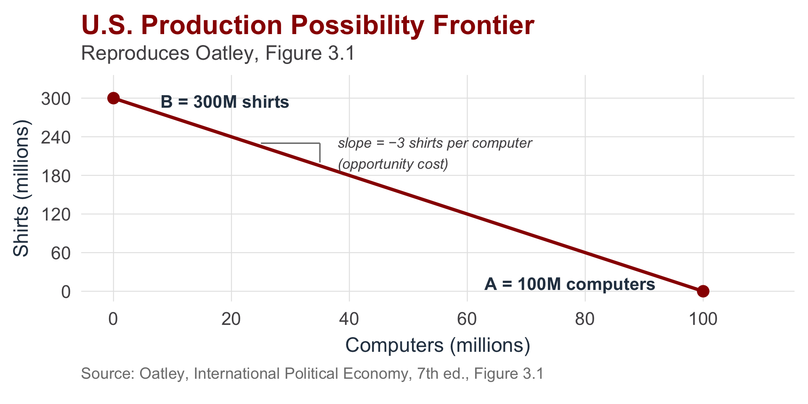
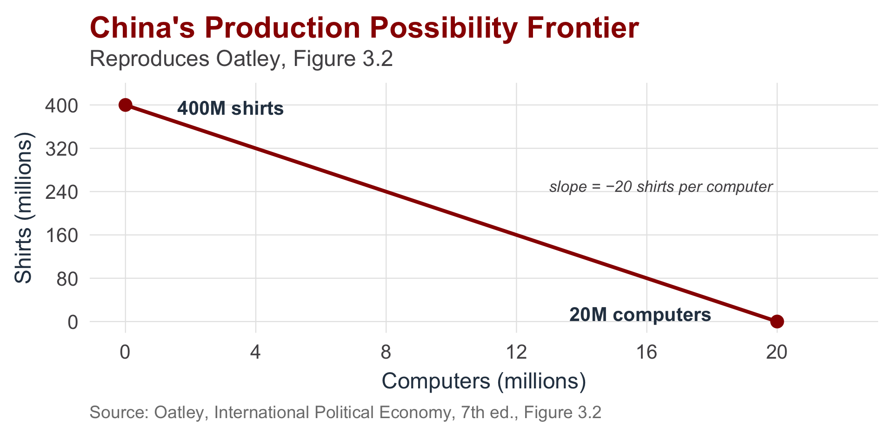
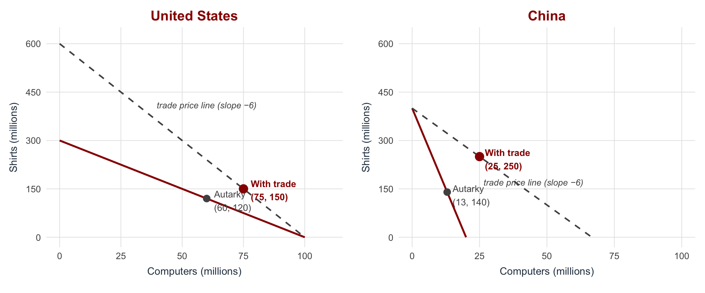
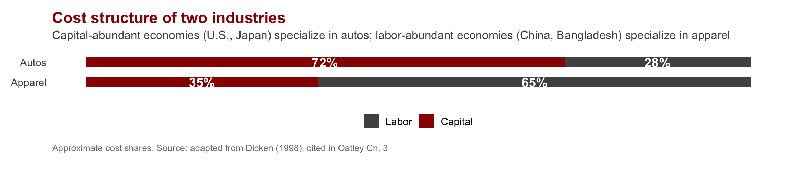
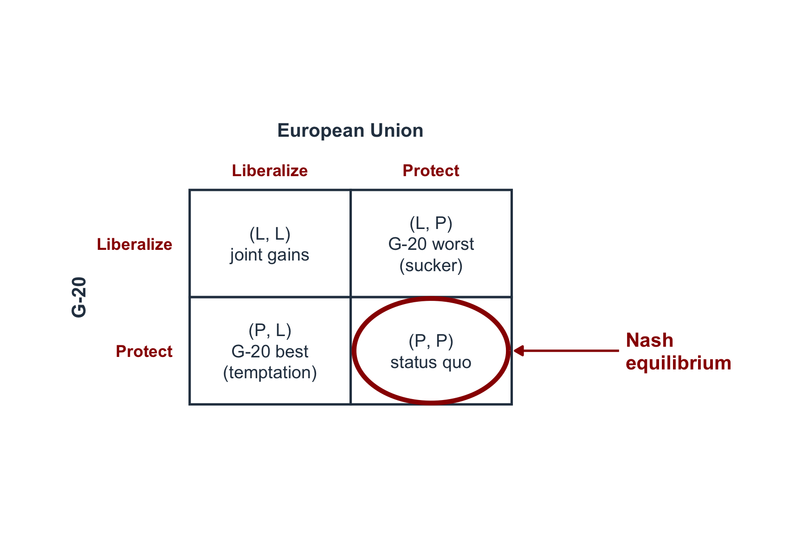
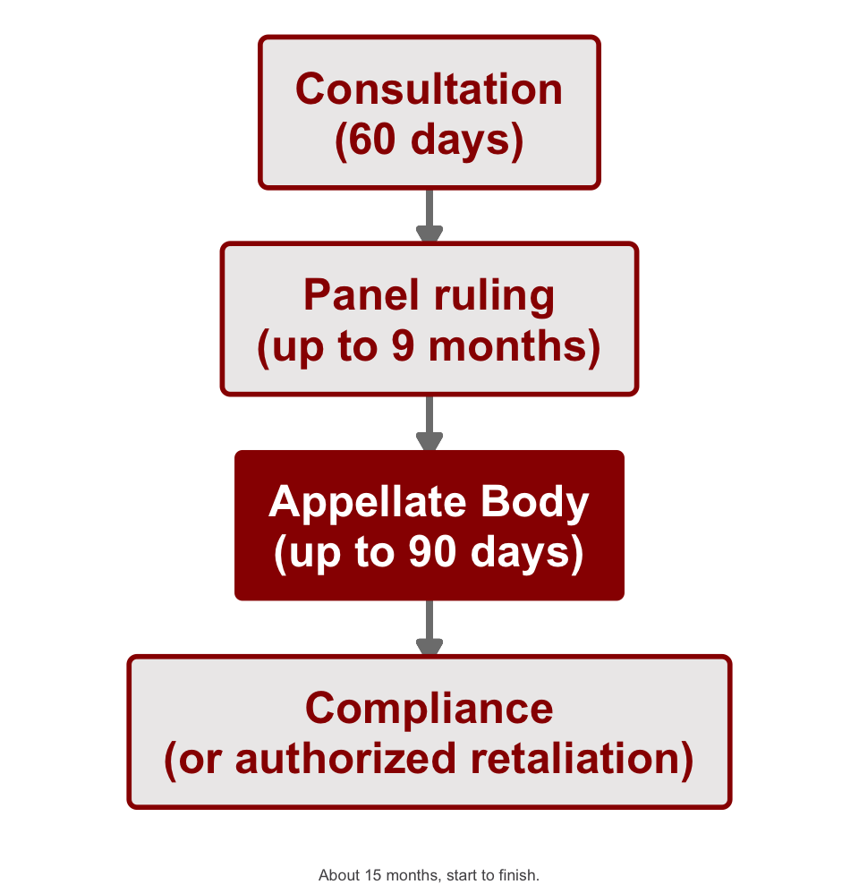
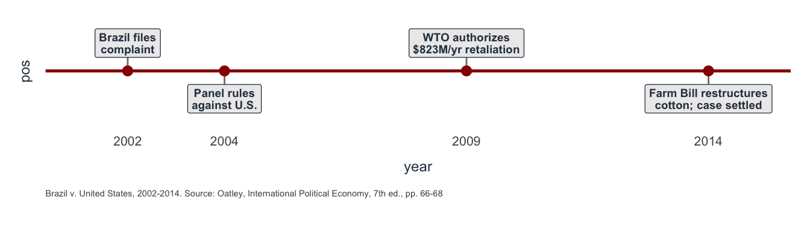
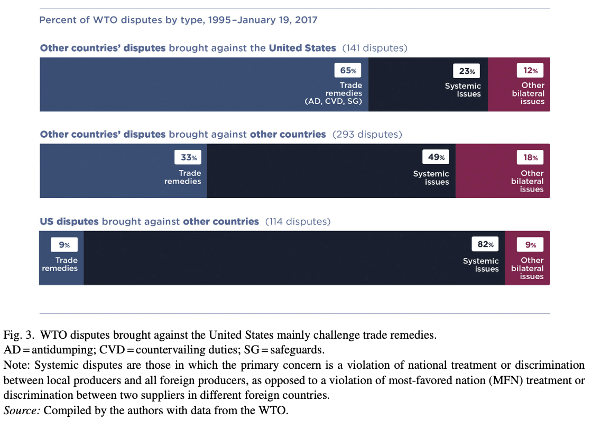
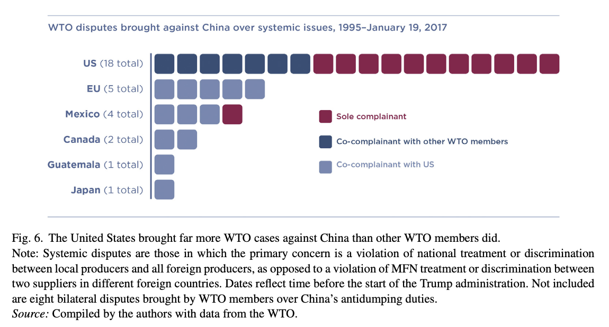

| Section | What we'll cover |
|---|---|
| 1 · Why Trade Cooperation Is Hard | The puzzle Oatley opens with — does the world still need the WTO? |
| 2 · The Economic Case for Trade | Gains from trade, comparative advantage, and why protection destroys welfare |
| 3 · The Bargaining Problem | Spatial bargaining, linkage, costly signals, and outside options |
| 4 · The Enforcement Problem | The prisoner's dilemma and why anarchy traps governments in protection |
| 5 · The WTO as Incentive-Compatible Enforcement | How iteration and reciprocity solve the cooperation problem |
| 6 · The DSM in Action: U.S.–Brazil Cotton | Brazil v. United States — how international rules work through domestic politics |
| 7 · Student article presentation | Bown & Keynes 2020 on the Appellate Body crisis |
| 8 · Writing prompt and discussion | Apply today's framework to a current case |
The Political Economy of International Trade Cooperation
INTL 503 | Chapter 3
Professor Sarah Bauerle Danzman
July 9, 2026
Today’s Plan
Today’s Big Question
Why is trade cooperation so hard even when everyone would gain — and what kind of institution does it take to make it possible?
Why Trade Cooperation Is Hard
Does the World Still Need the WTO?
Two Trends Since Doha Launched in 2001
Multilateral negotiations have completed zero new rounds. Regional agreements have not stopped.

The Economic Case for Trade
Comparative Advantage
Every country gains from trade by specializing in what it produces relatively well, even if it produces everything at higher cost than its trading partner.
What is not required
- An absolute cost advantage in any good
- The United States gains from trading with China even if U.S. firms could produce every good more cheaply
What is required
- Different opportunity costs across the same goods
- Each country specializes in the good for which it gives up less of others
- Both countries consume beyond what autarky allowed
The Production Possibility Frontier
The PPF shows everything a country could produce, given its labor and capital.
Its slope is the opportunity cost: how much of one good must be given up to make one more of the other.

China Has a Different Frontier
Same logic, different opportunity costs — because China has different factor endowments (more labor, less capital).

Trade Lets Both Consume Beyond Autarky
The two countries agree on a trade price (Oatley uses 6 shirts per computer).
Each fully specializes. Both consume on a higher indifference curve than autarky allowed.

Where Does Comparative Advantage Come From?
Ricardian model (Ricardo, 1817)
Comparative advantage comes from differences in labor productivity — i.e., technology.
Countries specialize where their technology gives them an edge.
Key insight: technology, not endowments, drives the pattern.
Heckscher-Ohlin (H-O) model (early 20th c.)
Comparative advantage comes from factor endowments — the relative supply of capital, labor, land.
- Capital-abundant countries → capital-intensive goods (autos, aircraft)
- Labor-abundant countries → labor-intensive goods (apparel)
Key insight: who owns the abundant factor wins from trade.

Trade Policy and Welfare
Standard introductory microeconomics, not in Oatley. The left panel shows the welfare consequences of opening a closed economy to trade; the right panel shows how a tariff partially reverses them.
![Two side-by-side supply-and-demand diagrams. The left panel illustrates the welfare effects of opening a closed economy to trade: as the price falls from the autarky level P to the world price P_w, the consumer-surplus area expands. Area A represents surplus transferred from producers to consumers; area B represents new welfare created by trade. The right panel shows the effects of imposing a tariff that raises the domestic price from P_w to P_t. Area A is producer surplus gained from the tariff; area C is government tariff revenue; areas B and D are deadweight loss triangles (inefficient production and forgone consumption).](day03-chapter03_files/figure-revealjs/fig-welfare-1.png)
Opening to trade transfers area A from producers to consumers and creates area B as new welfare. A tariff partially reverses this: area A is transferred back to producers as new producer surplus, area C is collected by the government, and areas B and D are destroyed as deadweight loss.
What This Theory Assumes
The standard comparative-advantage argument rests on three contested assumptions:
Market clearing
Prices and wages adjust freely; labor markets clear; no persistent unemployment.
Trade adjustment costs in practice can persist for decades and remain geographically concentrated.
Constant or decreasing returns
Markets are competitive rather than oligopolistic.
Trade in aircraft, semiconductors, and software is dominated by a small number of firms operating under increasing returns to scale.
Neutral terms of trade
Relative prices do not systematically favor some producers over others.
The Prebisch-Singer hypothesis argues that commodity exporters face deteriorating terms of trade against manufactured-goods exporters.
We will return to each of these assumptions when we cover development models and trade strategy.
Distribution Within Countries
Distributional conflict over trade is both interstate and intrastate. Country-level accounts of “winners” and “losers” obscure the within-country coalitions that produce national trade positions.
Between countries
Some countries gain more from a given agreement than others. Bargaining power determines the distribution (Section 3).
Within countries
Industries, regions, and factor owners gain and lose unevenly.
U.S. agriculture is heavily protected and subsidized despite farmers comprising roughly 1.5% of the population. The bicameral Senate gives Wyoming the same representation as California, amplifying the political power of rural producers.
Intrastate distribution is the subject of next lecture (Chapter 4). For today: “the U.S. position” in any negotiation is the position of the domestic coalition with sufficient political voice to define it.
The Bargaining Problem
Why Governments Do Not Liberalize Unilaterally
Trade gains exist in principle, but governments rarely cut tariffs without reciprocal concessions. The next slide develops a spatial model of why.
Unilateralism Seems Weak
- Domestic producer coalitions lose from open markets
- Unilateral liberalization gives up domestic protection without securing foreign market access for exporters
- The government moves away from its political ideal point
Bargaining Seems Strong
- Governments exchange market-access commitments
- A spatial model (next slide) maps the trade-offs in two dimensions
- Today we focus on bargaining power and the conditions under which impasses are resolved
The Bargaining Space
Each axis is the level of tariff protection one side controls. Bargaining outcomes are points in this space.
![Two-dimensional bargaining diagram for the Doha Round. The status quo sits in the upper-right (high tariffs on U.S./EU agriculture and on G-20 manufactures). The U.S./EU ideal point is in the lower-right (high agricultural protection, low G-20 manufacturing tariffs). The G-20 ideal point is in the upper-left (low U.S./EU agricultural protection, high G-20 manufacturing tariffs). Circular indifference curves are drawn around each ideal point with radius equal to the distance from the ideal point to the status quo. The shaded intersection of the two circles is the joint-gains lens: the set of agreements both sides prefer to the status quo.](day03-chapter03_files/figure-revealjs/fig-bargaining-1.png)
Linkage
Linkage bundles unrelated issues into a single negotiation. It is the principal mechanism by which large multilateral trade rounds reach agreement.
Why single-issue bargaining stalls
- Each side has a politically protected sector on which it will not concede
- The two-dimensional bargaining space is too narrow to contain a Pareto improvement
- Negotiations terminate at the status quo
Why bundled bargaining can succeed
- Combining agriculture, manufactures, services, and intellectual property creates room for cross-issue trade-offs
- A concession on agriculture can be offset by a gain on services
- The Uruguay Round (1986–1994) is the textbook case and produced the WTO itself
The Uruguay Round, the GATS, and the TRIPS agreement exist because linkage allowed issues that could not pass standalone to be bundled with issues on which both sides preferred movement.
What Confers Bargaining Power
The largest economy is not always the strongest bargainer. Power comes from the ability to credibly walk away from a deal.
- Patience (the “inside option”). Both sides lose from delay, but not equally — political stability and a longer time horizon let a government hold out for more.
- Outside options. A good next-best alternative to a deal lets a side hold out and lowers what it will pay for a multilateral concession — the U.S. and EU’s pursuit of TPP and TTIP after 2008 is the example.
- Signaling. Cheap talk (“this is our final offer”) is costless and uninformative. Costly signals — walking away, building outside options — actually reveal a side’s position, because a bargainer would not take them otherwise.
Arvind Subramanian (Trade Talks ep. 215, Day 1 podcast) argues RTAs are not only leverage for advanced economies — developing countries can use the same mechanism against China, signaling they will deepen ties elsewhere if China does not open its markets.
Recall Cutler’s Trade Talks episode (Day 2’s podcast, ep. 34, “So You Want to Be a Trade Negotiator”): patience, outside options, and signaling are all about standing firm, but Cutler’s own account stresses the opposite skill too — listening to the other side, letting them air grievances, and building the kind of trust that makes cooperation possible. Bargaining power gets you to the table; getting the other side to actually want to cooperate is a separate skill.
The Enforcement Problem
The Prisoner’s Dilemma Applied to Trade
Once an agreement is reached, each side has a unilateral incentive to defect: keep its own tariffs while the other side complies. The prospect of receiving the sucker’s payoff — comply while the other side defects — deters governments from signing in the first place.
The structure
- Both sides have agreed to comply
- Either can defect after signing
- The international system lacks a third-party enforcer
- What sustains compliance?

Both sides know they would be better off at (Comply, Comply). Individual rationality nonetheless drives them to (Defect, Defect). The equilibrium is collectively suboptimal.
Two Properties of the (D, D) Equilibrium
Pareto suboptimal
At least one player could be made better off without making anyone else worse off.
- Both sides prefer (C, C) to (D, D)
- (C, C) is reachable in principle
- Yet they don’t reach it
Nash equilibrium
No player can unilaterally improve their payoff by changing strategy.
- G-20 deviation from (D, D) yields (C, D), its worst outcome
- EU deviation from (D, D) yields (D, C), its worst outcome
- Neither player has a unilateral incentive to deviate
Together, these properties define the cooperation problem. The (Defect, Defect) outcome is stable (no unilateral incentive to deviate) yet collectively suboptimal (both sides prefer Comply, Comply). Individual rationality produces collective dysfunction.
The WTO as Incentive-Compatible Enforcement
Iteration
A one-shot Prisoner’s Dilemma traps countries in a suboptimal equilibrium (Defect, Defect). But states are long-lasting: they play repeatedly, and often with the same partners. In an iterated Prisoner’s Dilemma, cooperation can become rational under certain conditions.
One-shot game
- Defection yields the temptation payoff once
- No future round, no future punishment
- Cooperation is irrational
Iterated game
- Defection today invites punishment tomorrow
- The stream of cooperation payoffs (C, C) can exceed a one-time defection gain
- Cooperation is sustainable if players are sufficiently patient
- This result is the Folk Theorem in game theory
Three Conditions for Cooperation (Axelrod-Keohane-Oye)
1. Iteration
The same parties must play repeatedly and expect future interactions. Without iteration, no future round can discipline present behavior.
2. Reciprocity
Players need a strategy that rewards cooperation and punishes defection. The classic example is Axelrod’s tit-for-tat.
3. Future-orientation
Players must value future payoffs enough that anticipated punishment disciplines current behavior. A sufficiently low discount rate sustains cooperation; a high one collapses the game back to one-shot.
Robert Axelrod (1984), The Evolution of Cooperation; Robert Keohane (1984), After Hegemony; Kenneth Oye (1986), Cooperation Under Anarchy.
How the WTO Supplies These Conditions
Iteration
- Stable membership: 164 members and few exits in over seventy years
- Repeated rounds: eight completed, the ninth (Doha) ongoing
- Periodic policy reviews of every member by its peers
The same governments deal with each other repeatedly, year after year.
Reciprocity (information and standards)
- MFN and national treatment supply bright-line standards against which behavior can be evaluated
- Transparency requirements apply to trade remedies, safeguards, and non-tariff barriers
- The WTO publishes systematic data on every member’s tariffs and NTBs
Tit-for-tat requires that each side observe when its partner has defected. The WTO supplies the information.
Future-orientation is a property of governments themselves, not something the WTO can supply. When governments stop valuing future trade cooperation, the iterative logic of the institution erodes. (More on this when the student presents Bown & Keynes 2020.)
The DSM as Institutionalized Tit-for-Tat
The Dispute Settlement Mechanism (DSM) is the WTO’s formalized tit-for-tat. It legalizes retaliation, requires that retaliation be proportionate to the harm, and embeds the entire process in a predictable timeline. These features make WTO enforcement incentive-compatible: every member knows in advance the cost of defection.
Why incentive-compatible
- The cost of defection (authorized retaliation) is known in advance
- The punishment is proportional to the harm caused
- The process is transparent and rule-bound
- Governments can rationally weigh compliance against the predictable price of non-compliance

The WTO Is Not a State
“The WTO is not an international equivalent of a state because the WTO does not have the authority or the capacity to punish governments that fail to comply.” (Oatley, p. 70)
What the WTO cannot do
- Levy fines or sanctions on a member
- Compel a member to change policy
- Override domestic law
- Maintain anything resembling a police force
What the WTO does instead
- Provides rules members have agreed to
- Provides information about compliance
- Provides a dispute mechanism that allows members to enforce agreements against one another
- Activates domestic political coalitions inside a non-compliant country (next slide)
The WTO provides infrastructure for self-enforcement among its members. This distinction matters for understanding both how the cotton case worked and why the Appellate Body crisis matters.
The DSM in Action: U.S.–Brazil Cotton
The Cotton Case — and Its Limits Today

Why this case is weaker evidence today
- The 2018 Farm Bill returned seed cotton to the same type of price-support programs that prompted Brazil’s original complaint, reversing the insurance-only fix
- The Appellate Body — the mechanism that made this whole story work — has lacked a quorum since December 2019
Broken for the U.S., Not for Everyone
- In 2020, 61 WTO members — not the U.S. — formed the Multi-Party Interim Appeal Arbitration Arrangement (MPIA), using Article 25 arbitration as a substitute appeal process
- The MPIA has issued two binding awards since 2020 (Colombia–EU frozen fries, 2022; EU–China IP enforcement, 2025)
- Since December 2019, roughly 32 panel rulings have been appealed “into the void” and left unenforced — but most panel rulings are still adopted without ever being appealed
Bown & Keynes (2020): Article Overview
| Element | Bown & Keynes (2020) |
|---|---|
| Research Question | Why did the US decide to dismantle the DSM's Appellate Body? |
| Main Claim | The end point of two decades of bipartisan U.S. frustration that the DSM kept striking down America's preferred trade-remedy tools (antidumping, countervailing duties, safeguards) while requiring the U.S. to carry the hardest, highest-burden 'systemic' cases -- especially against China -- largely alone. |
| Argument Space | Complicates two standard stories: that the U.S. exit was pure nationalist hostility to international law (frustration with the Appellate Body dates to 1995 and spans both parties), and that the DSM is a neutral, incentive-compatible enforcer that sustains cooperation regardless of power (it became politically unsustainable for the very state whose continued buy-in it needed most). |
| Evidence Used | Original data construction from WTO and U.S. trade records: import-coverage shares for VERs, antidumping, countervailing duties, and safeguards (1972-2019); dispute counts by type, complainant, and defendant (1995-2017). Supplemented with USTR testimony, congressional records, and the authors' own interviews (their Trade Talks podcast). |
| Implications | The Appellate Body's paralysis reflects a structural asymmetry in how the DSM's costs and benefits were distributed, not just one administration's preferences. A durable fix likely requires rebalancing access to trade remedies, not simply reappointing judges -- and the system has already fragmented into an MPIA track and a non-MPIA track. For international organizations more broadly, the lesson is that keeping powerful members inside the system may require watching for institutional over-reach against those members, not just enforcing rules evenhandedly. |
Bown & Keynes (2020): The Evidence


Discussion Questions
- What were the major complaints the U.S. developed regarding the Appellate Body? Were any of these confusing and worth explaining further?
- The article emphasizes that Ambassador Lighthizer’s personal role in the Trump administration was central to the decision to block Appellate Body appointments. How does this build on Wendy Cutler’s insights from her podcast (Day 2)?
- Where does the U.S.’s policy preference on trade remedies come from — interest groups, the state’s own distinct preferences, or something else?
Writing Prompt: Can the WTO Survive Without an Appellate Body?
Writing prompt. The cotton case worked because the DSM turned a diffuse trade grievance into a credible, incentive-compatible threat — Brazil could target U.S. cotton subsidies precisely because the ruling was enforceable. Bown and Keynes just showed you that the Appellate Body has had no working quorum since December 2019.
Using the three conditions for cooperation from today — iteration, reciprocity, and future-orientation — make an argument: has the WTO’s capacity to sustain cooperation actually collapsed, or does the underlying game still hold even without a functioning appeals body? Name the strongest piece of evidence against your own position.
Write for about fifteen minutes. Use at least two of the three conditions by name. Then we’ll discuss as a class.

INTL 503 | The Political Economy of International Trade Cooperation